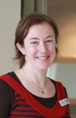

- Phone: 0800 000 856
- Fax: (03) 974 2239
- enquiries@onthegophysio.co.nz
- PO Box 32004, Christchurch 8147
On The Go Physio - Christchurch - New Zealand
Our Team
Jessie Snowdon
Bachelor of Physiotherapy 1998, Postgraduate Certificate in Rehabilitation 2009, Member of Physiotherapy New Zealand including the Neurology and Older Adults Special Interest Groups.
Jessie is the founder and director of On the Go Physio. She graduated from Otago University in 1998 and has worked in Christchurch, Edinburgh and London in a variety of roles. Jessie has experience working with people with a range of neurological, orthopaedic and age related conditions including Parkinson’s disease, Multiple Sclerosis, Head Injury, Stroke, elective and traumatic joint replacements, falls, respiratory conditions and general loss of function following illness or injury. She is highly skilled in equipment prescription including wheelchairs and seating systems. She is trained in falls prevention and has a special interest in working with older adults. Jessie has completed the ‘Train the Trainer’ patient handling course and is a skilled presenter.
Tara Martin
Bachelor of Science, Hons Physiotherapy. Postgraduate Diploma in Clinical Rehabilitation 2010. Masters of Health Science 2014.
Tara is experienced working with a range of neurological conditions including Parkinson’s disease, Multiple Sclerosis, Head Injury, Stroke and Spinal Cord Injury as well as general Older Adults health and falls prevention. She is experienced in working with amputees and orthopaedic conditions. She was the first New Zealand Physiotherapist to be certified in LSVT Big (a specialised programme for people with Parkinson’s Disease) and is frequently requested for talks throughout New Zealand regarding her work with people with Parkinson’s Disease.
Rebecca Washbourn
Bachelor of Physiotherapy 1995, Postgraduate Diploma in Rehabilitation 1999, currently completing her Masters in Rehabilitation
Rebecca has had a hugely varied career in Rehabilitation including recently implementing a new rehabilitation service in Rarotonga. She is very experienced in policy formation and management of teams as well as manual handling training. . She is an excellent problem solver and enjoys working with people on whatever it is they want to achieve. She has worked with people with spinal injuries, head injuries and just about everything else you could imagine!
Desiree Allen
Bachelor of Health Science (Physiotherapy) 1996, Postgraduate Certificate in Clinical Teaching 2007
Desiree has worked in hospitals, rest homes, clinics and with clients in the community in New Zealand and the UK. She has experience working with people with neurological conditions, including stroke, Multiple Sclerosis, Motor Neurone Disease, head injury, Parkinson’s disease and Spina Bifida. She is also experienced with orthopaedic conditions, falls prevention, older persons health, amputees and clients with intellectual disability. She is skilled in scooter, wheelchair and seating prescription.
Desiree is passionate about working with clients in their own environment to help them get the most out of life.
Nicola Glassey
Physiotherapy Assistant
Nicola initially worked as a carer in a residential care facility and was quickly identified (correctly!) as having the potential to be an excellent Physiotherapy assistant. She currently works in a large residential hospital and also works for On the Go Physio 3 days per week. Nicola is available to work with people who have established a programme with a Physiotherapist and whose treatment is enhanced by extra input, or who no longer need the direct input of a Registered Physiotherapist. Nicola works under the supervision of a Physiotherapist who continues to monitor and review the client’s progress.
Ronald Booster
Bachelor of Physiotherapy (1993), The Netherlands.
Ronald has worked in the Netherlands, Australia and New Zealand, starting off in private practice and then moving onto residential and supportive care. He has experience working with patients with complex medical backgrounds and those with intellectual disability.
Ronald has a special interest in functional rehabilitation and Neurology and has a hands on approach.
Contact us
| Email: | enquiries@onthegophysio.co.nz |
|---|---|
| Office: | 0800 000 856 |
| Fax: | (03) 974 2239 |